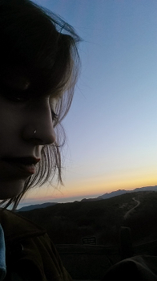

It is a funny thing to present a portfolio at the beginning of a career. I feel a bit like I am laying an egg without a chicken. But something has to have laid that egg, and let's face it, the answer is neither the chicken nor the egg: it is evolution.
It took some time inside and outside of educational institutions to identify the path I was already on, but looking back, the road is clear.
At theater school, I learned collaboration. I learned how to set an objective and focus on it relentlessly. I learned how to make something out of nothing.
In the service industry, I learned how to listen to people beyond even what their words expressed. I learned how to express my needs to others. I learned how to multitask. I learned patience and the satisfaction I get from throwing myself into my work when things get intense.
There are no mistakes. There are only opportunities for growth. I learned this by being in my twenties.
I also learned that once I stopped making mistakes, it was time to try something more challenging so I could grow again. This is how I landed in code school.
It is time to go somewhere unfamiliar, do something I feel awkward doing, and be someone who can thrive in any circumstances.
My desire to travel has hardly been satisfied, but what I have learned by the occasional trips I've taken is that there are myriad cultures, varying from macro to micro, and their qualities can be harnessed in essence. I believe that the culture of each individual programming language has the same power, and I look forward to bringing my interest in relationships and linguistics to the Web, for the one we weave is tangled, but I prefer knots to have nots.